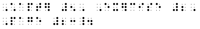

Punctuation: Unless otherwise stated, words and English braille numerals must be punctuated according to the rules of English braille. Mathematical expressions such as Nemeth code numerals, mathematical symbols, etc. must be punctuated in accordance with the rules of Nemeth code.
Punctuation Marks and Use of the Punctuation Indicator: Since numerals and punctuation marks are represented by identical lower-cell braille symbols, the punctuation indicator  must be used before one or before a sequence of two or more of the punctuation marks listed below when they follow a numeral or any other mathematical expression. must be used before one or before a sequence of two or more of the punctuation marks listed below when they follow a numeral or any other mathematical expression.
| Punctuation Indicator
|
|
|
| Punctuation Marks
|
|
| Apostrophe
| ,
| 
|
| Colon
| :
| 
|
| Exclamation Point
| !
| 
|
| Period
| .
| 
|
|
| Question Mark
| ?
| 
|
| Quotation Marks
|
|
| Outer (opening and closing)
| " "
| 
|
| Innter (opening and closing)
| ' '
| 
|
|
| Semicolon
| ;
| 
|
- 5 and 3 are 8; 5 and 13 are 18.
- "Do 6 and 4 equal 10?"
Punctuation Marks and Nonuse of the Punctuation Indicator:
| Hyphen
| -
| 
|
| Dash (short)
| --
|
|
| Comma
|
|
| Literary
| ,
| 
|
| Mathematical
|
|
| American*
| ,
|
|
| Continental*
| .
|
|
|
|
*Although the symbols for the American and Continental commas differ from print, the difference is not shown in braille. A transcriber's note must be included at the beginning of the braille text to inform the reader of the Continental usage in the ink-print edition.
- Hyphen and dash: The punctuation indicator must not be used before the hyphen or the dash. Unless otherwise stated, a word or part of a word joined to a numeral by the hyphen or the dash must be contracted and punctuated according to the rules of English braille. A space must be left between a hyphen and an adjoining dash.
- He bought a 6-cent stamp.
- An octagon is 8-sided.
- 1-ary is the same as unary.
- 12--one dozen--costs 48 cents.
- It is 5- --as shown-- not 6-sided.
- Mathematical Comma: The mathematical comma must be used for a comma occuring in a long numeral or following a numeral or other mathematical expression. The punctuation indicator must not be used before the mathematical comma.
- In 1,234,567, 1,3,5,and 7 are odd numbers.
- Add: 10,20, and 30.
- Chapter 5, Exercise 2, Page 23.

- 1
 935 935
(the Continental comma is shown in print)
Note: In a sequence of punctuation marks, the punctuation indicator must precede the first punctuation mark following a mathematical expression. However, it is omitted before the mathematical comma, the hyphen, or the dash.
- 6-, 7-, and 8-sided figures.
- It is "plus 3", not "minus 3."
- In "Figure 4", find the area.
- "The answer is 10--," he paused.
- Literary Comma: The literary comma must be used when a comma follows a word, an English braille numeral, or any other literary expression. The punctuation indicator must not be used before the literary comma.
- The polygon is 5-sided, not 6-sided.
- The sum, 4,426, is correct.
- Six-, seven-, and eight-sided figures.
- "We paused--," he said.

- Copyright 1958, 1962, and 1970
(numerals on a title page)
|
 Tჸe $_hodor bARionlegitim@.
Tჸe $_hodor bARionlegitim@.